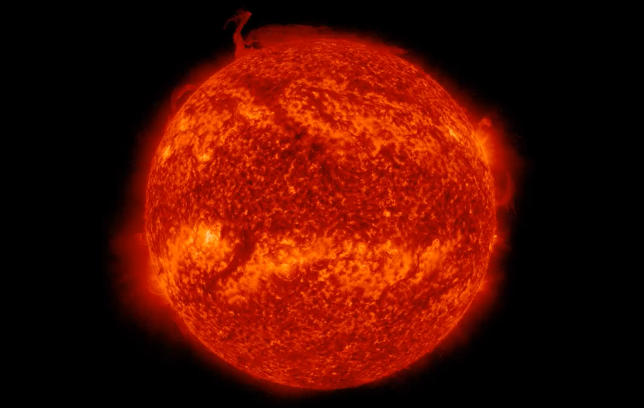

Sun Ruptured Research
Intro.
As many scientists know, the sun is a large ball of hydrogen that is fused into helium. It does this by combining hydrogen atoms, which then form helium atoms. The sun is the center of the solar system and consists of a core (middle of the sun), a radiative zone, which is outside the core, a convection zone, which spins around the radiative zone, a photosphere (Close to the surface of the sun), the chrmosphere (surface of the sun), and a corona (area surrounding the photosphere). The sun contains almost all of the solar system's mass.
Why did a piece of the sun break off?
Scientists are very perplexed by this sudden piece of sun breaking off, but believe that it is the sun's reversing magnetic field, which occurs once every solar cycle. A solar cycle is an 11-year change in the sun's activity measured using the number of observed sunspots on the surface of the sun. During the period, levels of slar radiation and ejection of solar material, the number and size of sunspots, solar flares, and coronal loops all exhivit a fluctuation from a period of small amounts of activity to huge amounts of activity back to a period of small amounts. The sun's magnetic field flips during solar cycle. When the solar cycle is near its maximum, the flip happens. The hale cycle occurs after two solar cycles where the sun's magntic field returns to its original position. This cycle has been observed for centuries and this is what causes aurora.
What has NASA gotten?

Image from the National Aeronautics Space Administration
Take a look at this image for a second. What do you see? Solar flares popping out, coronal mass ejections? No, it is the sun breaking at the north from the 55 degree latitude line. The sun is currently going through a solar cycle expecting to peak by the year 2025.
Sources:
https://www.businesstoday.in/latest/trends/story/nasa-captures-piece-of-sun-breaking-off-baffles-scientists-369798-2023-02-10
https://metro.co.uk/2023/02/10/part-of-the-sun-broke-off-and-weve-never-seen-anything-like-it-18259267/#:~:text=Observations%20from%20Nasa%E2%80%99s%20Solar%20Dynamics%20Observatory%20%28SDO%29%20have,fire%20in%20remarkable%20footage%20shared%20on%20social%20media.
https://tech.hindustantimes.com/tech/news/shocking-large-chunk-breaks-off-the-sun-creates-terrifying-vortex-should-we-be-worried-71676029059181.html
https://nasa.gov